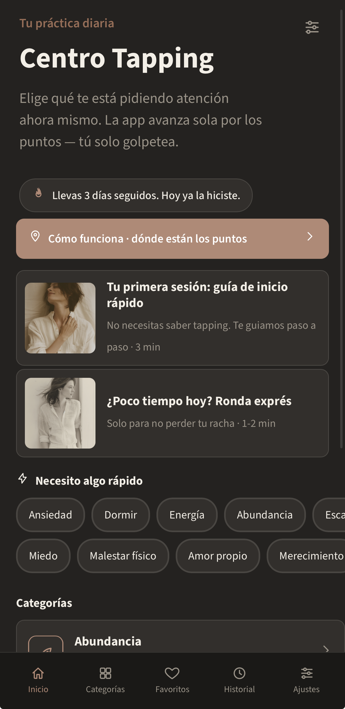
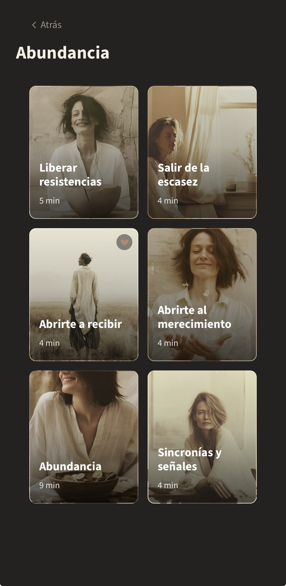
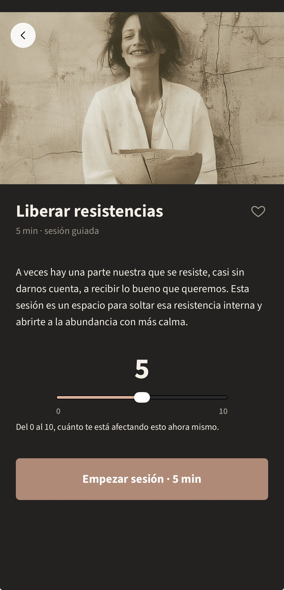
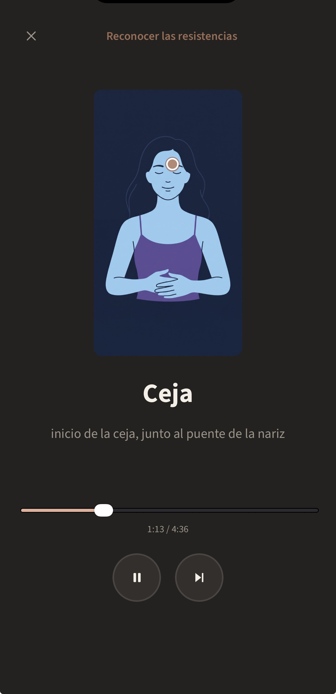

¿No recuerdas dónde está cada punto?
Tienes la guía dentro de la propia aplicación.


Centro Tapping reúne tus sesiones guiadas en un solo lugar para que puedas elegir lo que necesitas, empezar y dejar que la app te acompañe por cada punto.
Compra única · Sin suscripción
Acceso desde móvil, tablet u ordenador.

Pero muchas veces el problema empieza antes de la propia sesión.
Entrar en YouTube y empezar a buscar qué sesión hacer.
Voces diferentes, duraciones diferentes, estilos diferentes.
Cuando realmente solo querías parar un momento y hacer tu práctica.
Sesiones guardadas aquí, otras allá y ninguna organización clara.
Centro Tapping nace precisamente para solucionar esa parte.
Abres Centro Tapping, eliges qué quieres trabajar y empiezas.
Encuentra una sesión según lo que quieres trabajar en ese momento.
Pulsa "Empezar sesión" y sigue las indicaciones.
La aplicación avanza por los puntos mientras la sesión está guiada.
Registra cómo te sientes y consulta tu historial cuando quieras.



No necesitas decidir qué vídeo buscar. No necesitas saltar entre canales. No necesitas recordar dónde estaba aquella sesión que te gustó.
Simplemente eliges y empiezas.
Guarda las sesiones que más utilizas para encontrarlas rápidamente.
Consulta las sesiones realizadas y tus registros anteriores.
Centro Tapping incluye una sesión especial, "Tu primera sesión", y una guía donde puedes consultar cuáles son los puntos, dónde están y cómo identificarlos.
Centro Tapping es una herramienta de práctica personal.

Conocía el tapping desde hacía años, pero no fue hasta hacer un curso sobre abundancia y mi relación con el dinero que empecé a practicarlo de forma habitual.
Cada vez que quería hacer una sesión, tenía que entrar en YouTube, buscar, elegir una voz que me gustara y decidir cuánto tiempo dedicarle.
De ahí nació la pregunta: ¿y si simplemente tuviera todas mis sesiones en un mismo lugar? Y quería, además, que fuera fácil de usar para las mujeres de mi familia. Así nació Centro Tapping.
Después de comprar recibirás tu código de activación por email.
Realizas tu compra.
Recibes tu código de activación por email.
Abres Centro Tapping.
Introduces el código.
Accedes a la aplicación.
Ingresa el número de compra de tu email de confirmación (empieza con "HP").
Sí. Centro Tapping funciona como una aplicación web/PWA y puedes utilizarla desde móvil, tablet u ordenador.
No es obligatorio. La experiencia está diseñada para usarse fácilmente desde el navegador, y también puede funcionar como app instalada (PWA).
No. Es una compra única.
Recibirás la información necesaria para activar Centro Tapping.
Sí.
Sí.
No necesariamente. Existe una sección "Tu primera sesión" y una guía de los puntos para ayudarte a comenzar.
No. Las sesiones están planteadas como sesiones guiadas dentro de la aplicación.
Sí. Puedes añadir sesiones a Favoritos.
No. Centro Tapping es una herramienta de práctica personal y no sustituye atención médica, psicológica o profesional.
Escríbenos a ellegajooficial@gmail.com.
Deja de buscar cada vez que quieras hacer tapping. Ten tus sesiones a mano y empieza cuando quieras.
Quiero Centro TappingCompra única · Sin suscripción